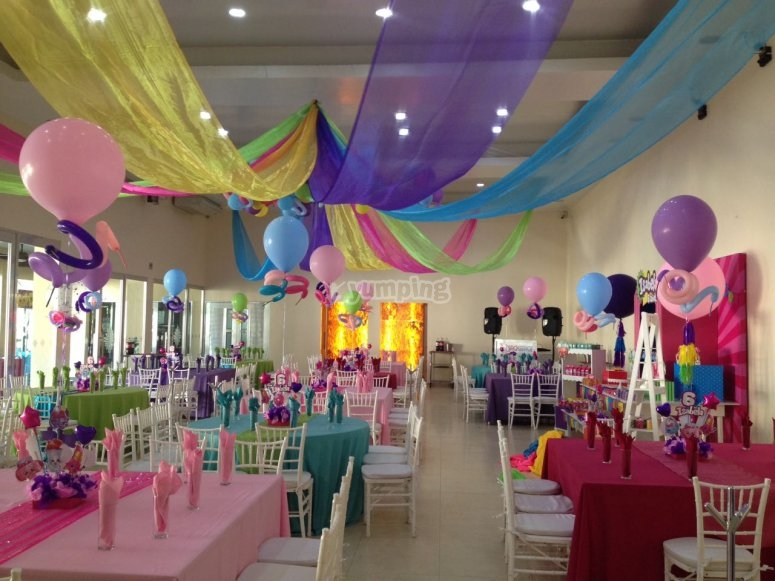
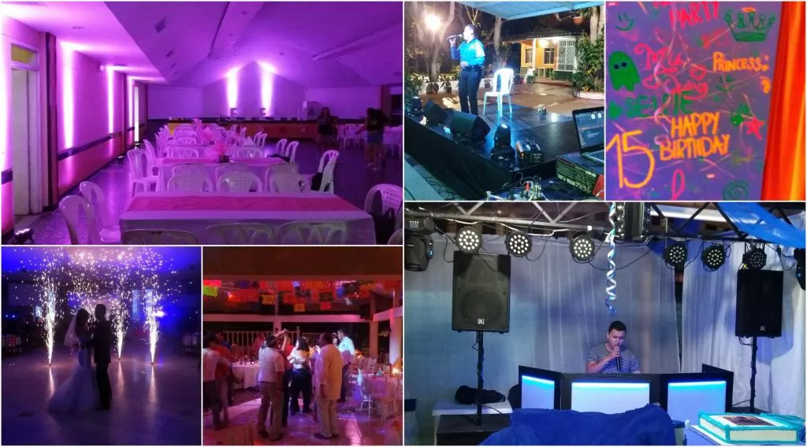

Catering Empresarialcatering somos especialistas en eventos empresariales, siendo pioneros en técnicas e innovación. Trabajamos todos los días con empresas multinacionales de todos los sectores ofreciendo servicios de coffee break, lunch, cóctel… ofreciendo siempre productos frescos y de alta calidad. Si desea contratar con nosotros eventos regulares, solicite una prueba de menú y confeccionaremos junto a usted la mejor opción para su empresa. |
|
Catering BodaPonemos a su disposición nuestra asesoría de bodas para crear un evento perfecto. Elaboración de menús personalizados, cóctel al inicio, barra de bebidas premium, alquiler de menaje… todo lo que pueda necesitar para su día especial. |
|
|  |
Catering Infatil.Disfrute con nuestro catering para fiestas infantiles.Ponemos toda nuestra experiencia para que les de esa alegría a sus pequeños y le sorprenderá que no es tan caro como parece. Como padre o madre, haría cualquier cosa para cumplir los sueños de sus niños… ¿Verdad? Con nuestro servicio de catering para cumpleaños le aseguramos que es así. |
Catering para toda clase de eventosDisfrute con nuestro catering para fiestas infantiles. En Catering y Cócteles ponemos toda nuestra experiencia para que les de esa alegría a sus pequeños y le sorprenderá que no es tan caro como parece. Como padre o madre, haría cualquier cosa para cumplir los sueños de sus niños… ¿Verdad? Con nuestro servicio de catering para cumpleaños le aseguramos que es así. |
 |
Nuestra empresa proporciona la total organización de bodas, fiestas privadas, almuerzos….tanto en la parte de catering como en todo lo necesario para el montaje de mesas, carpas, personal eficiente…etc. Disponemos también de la zona de cafetería y restauración del “Palacio de Exposiciones” y de una impresionante carpa en ” La Casa de Valle” en un marco incomparable para cualquier celebración.